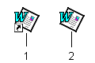
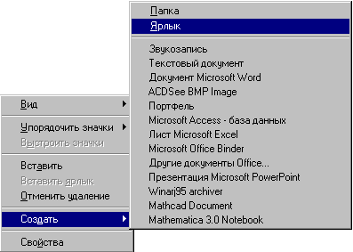
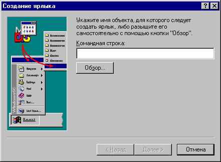
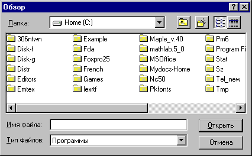

«начок €рлыка выгл€дит так же, как и значок соответствующего приложени€ или документа, за исключением маленькой изогнутой стрелки в левом нижнем углу значка:

–ис. 1.8: 1 Ч €рлык приложени€ MS Word; 2 Ч значок этого приложени€
ярлыки наиболее часто используемых приложений обычно размещают дл€ удобства использовани€ на –абочем столе
.ƒл€ создани€ €рлыка выполните следующие действи€:


–ис. 1.9: ќкно ћастера создани€ €рлыка

„аще всего приходитс€ создавать €рлыки ѕроводника, текстового процессора MS Word и электронных таблиц MS Excel. ”кажем стандартное расположение €рлыков этих приложений:
„тобы изменить параметры €рлыка (например, размер открываемого окна или сочетание клавиш, использующеес€ дл€ его открыти€), откройте с помощью правой кнопки мыши контекстное меню €рлыка и выберите в нем команду —войства.